Artboard · gesimuleerd op de echte H1-test-pagina · niets aangepast
Alle beelden zijn schermafbeeldingen van de productpagina van 811 Walnut Classic in H1-test. Ik heb de nieuwe onderdelen in de browser toegevoegd, met de echte stalen, prijzen en links van de 6 houtdecors. Er is niets opgeslagen.
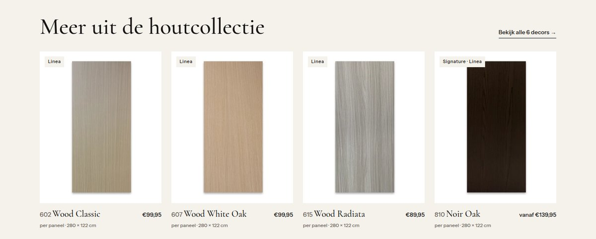
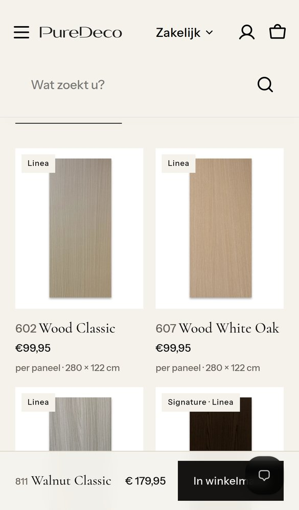
Het blok toont 4 van de 5 andere decors. Juist 812 Walnut Deep, de tint die het dichtst bij 811 ligt, valt weg.
Een paneel van 280 cm op wit wordt op een kaart een smalle streep. Kleur en nerf, het sterkste punt van de toplaag, zijn nauwelijks te zien.
Licht en donker staan door elkaar. Wie "iets lichter dan 811" zoekt, moet zelf vergelijken.
Wie twijfelt tussen twee tinten, moet eerst naar elk product of naar de stalenpagina.
Zes echte stalen, van licht naar donker. Het decor dat je bekijkt is omlijnd. Een tik opent het andere decor via de bestaande productlink; er worden geen URL's aangepast. Zo wissel je van tint zonder terug naar de collectie.
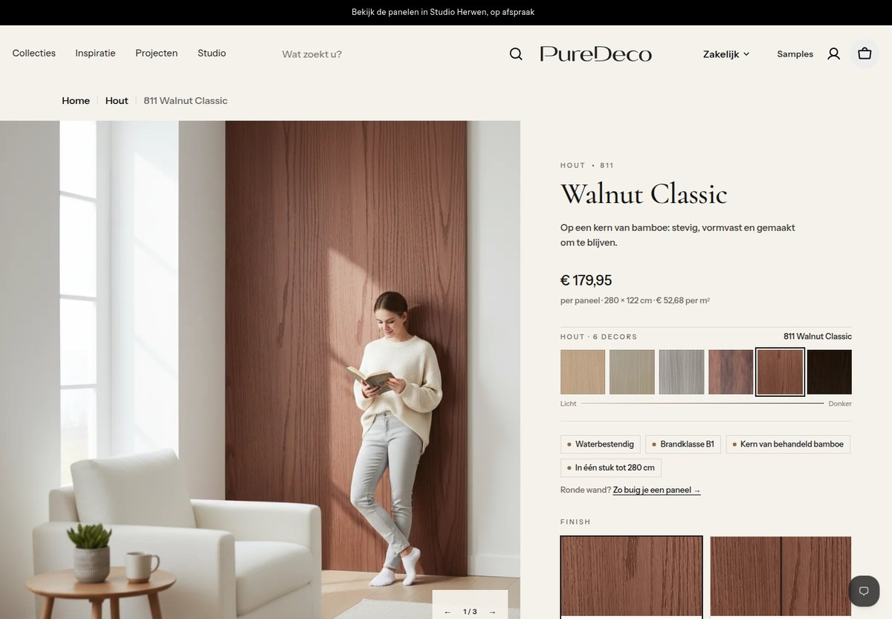
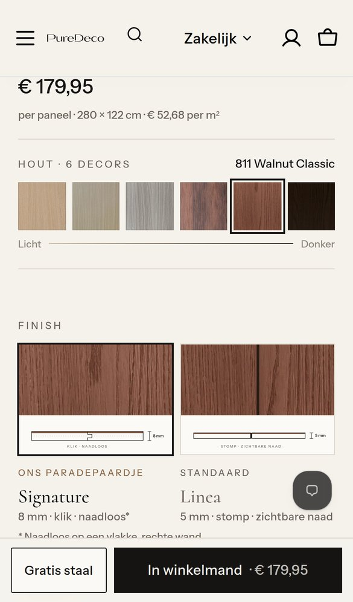
Op de telefoon passen alle 6 stalen naast elkaar.
Alle 6 decors naast elkaar, van licht naar donker, met een close-up van het echte decor. Met één knop wissel je naar een interieurbeeld. Het huidige decor staat ertussen met "Je bekijkt dit decor". Elke kaart heeft een eigen knop "+ Gratis staal". Die gebruikt hetzelfde stalenmandje als nu: tot 5 stalen gratis, alleen € 6,95 verzending.
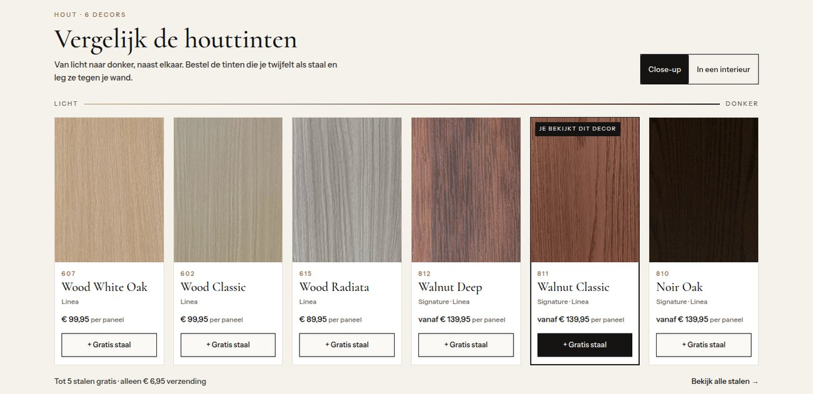
Desktop · Close-up: uitsneden van de echte productfoto's (de stalen die al in Bestanden staan).
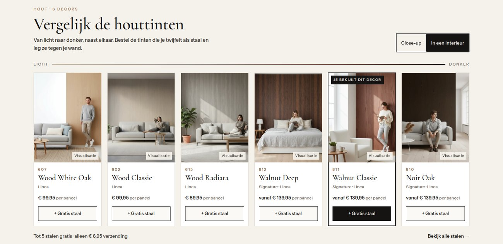
Desktop · In een interieur: het interieurbeeld van elk decor, met het label "Visualisatie".
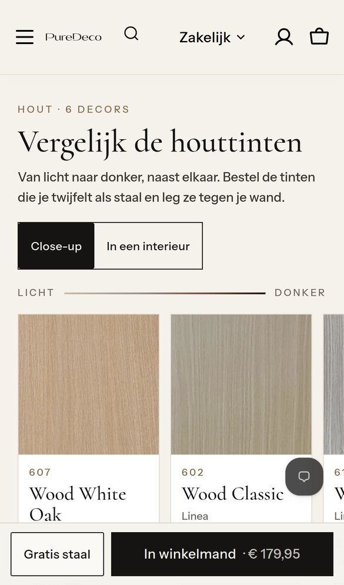
Mobiel: de kop met de schakelaar Close-up / In een interieur.
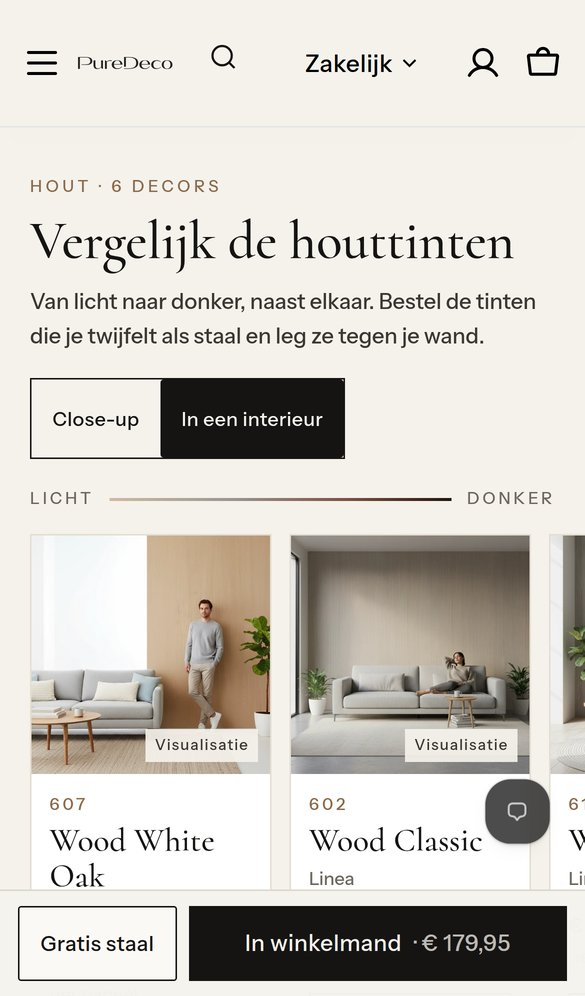
In een interieur, met het label Visualisatie.
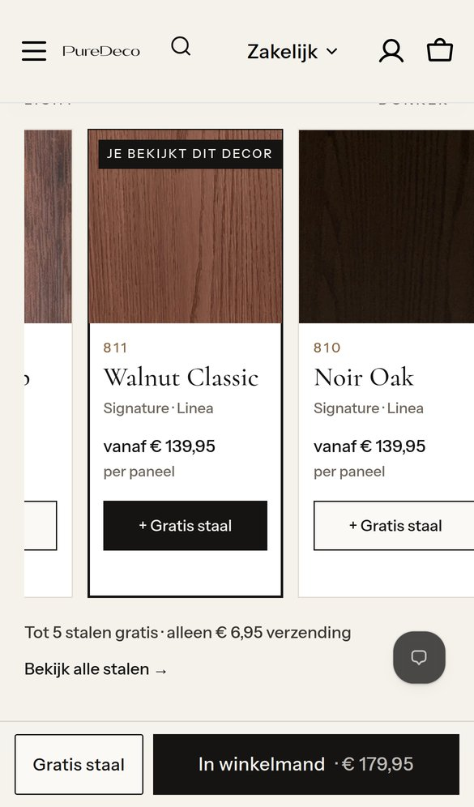
Swipen door de tinten. Per kaart staan de finish, de prijs en "+ Gratis staal".
Hoe de volgorde tot stand komt
Ik heb de helderheid van elk staal gemeten, op een schaal van 0 tot 255. In het thema leg ik de volgorde vast als een lijst die je zelf kunt aanpassen in de thema-editor. Komt er een nieuw houtdecor bij, dan zet je het op de juiste plek in die lijst.
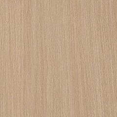
607 Wood White Oakhelderheid 167 · warm licht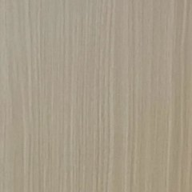
602 Wood Classic157 · licht naturel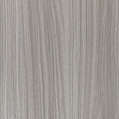
615 Wood Radiata155 · licht grijs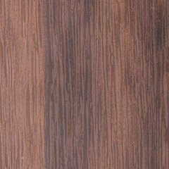
812 Walnut Deep106 · walnoot, gevlamd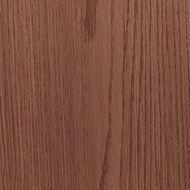
811 Walnut Classic87 · walnoot, warm rood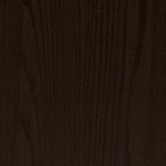
810 Noir Oak24 · donkerWat het professioneel maakt
De close-ups zijn uitsneden van de echte productfoto. Interieurbeelden staan alleen achter de schakelaar en dragen altijd het label Visualisatie.
Overal dezelfde volgorde van licht naar donker: in de koopkolom, onderaan de pagina, en later ook op de collectiepagina.
Twijfel tussen 811 en 812? Je tikt twee keer "+ Gratis staal" en bestelt ze samen. Dat is het eerlijkste antwoord op "lijkt dit op mijn interieur".
Hetzelfde blok werkt voor steen, beton en de andere collecties, met hun eigen stalen. Heeft een decor nog geen staal in Bestanden, dan zoomt de kaart in op de productfoto.
Onder het blok komt een kleine regel: "Kleuren op een scherm kunnen afwijken. Een staal laat het echte decor zien."
Graag jouw akkoord